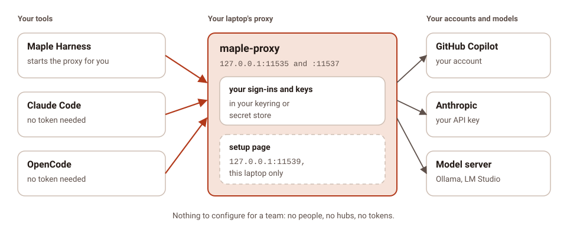
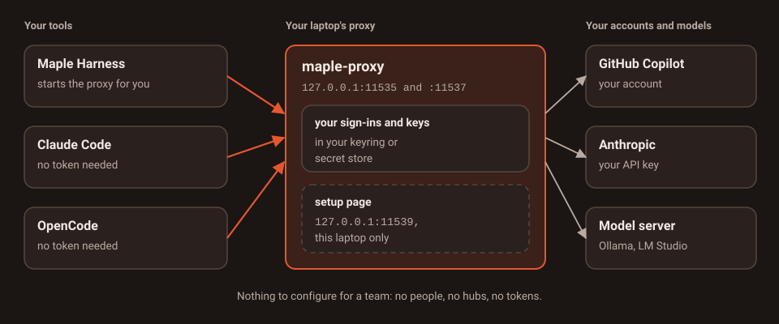
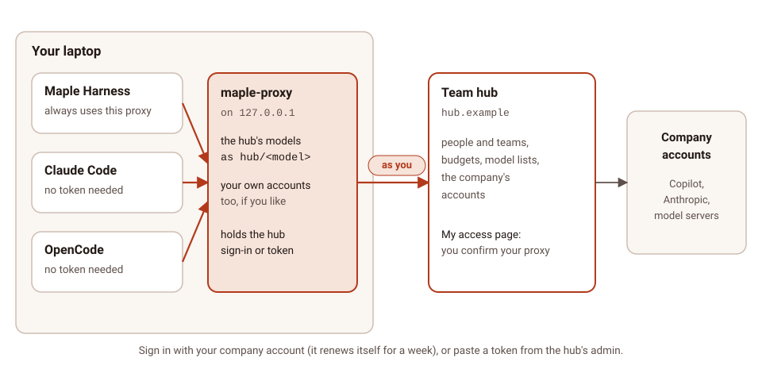
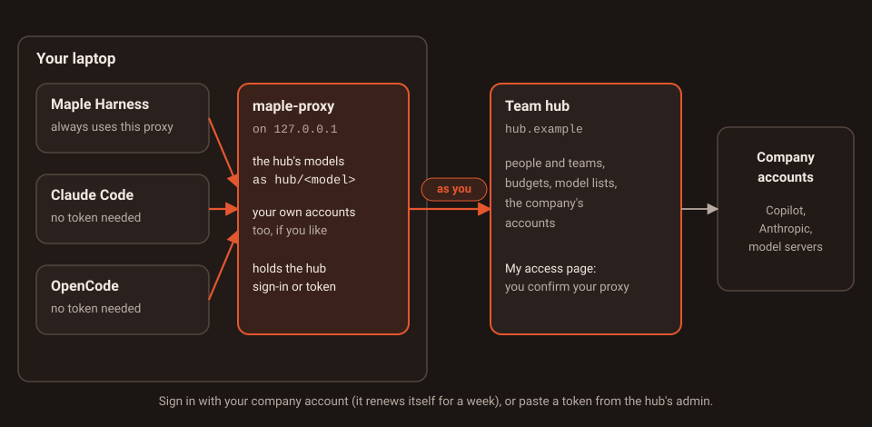
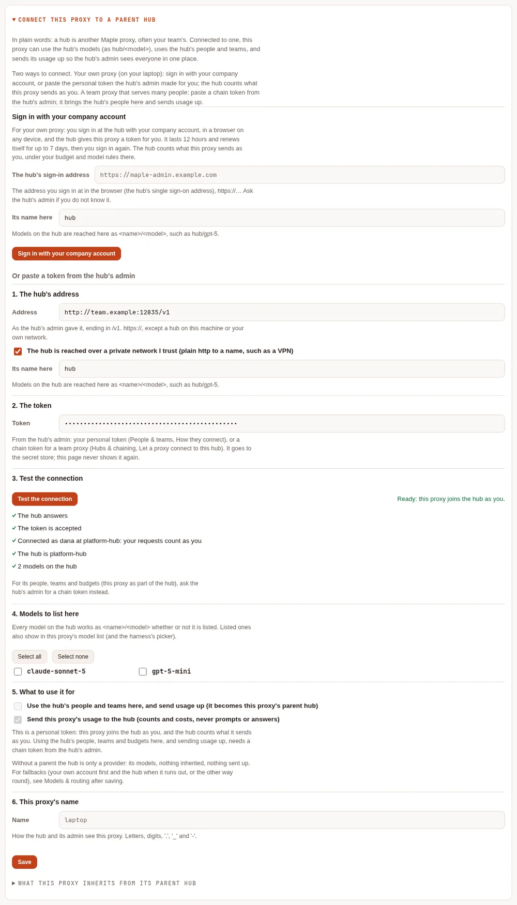
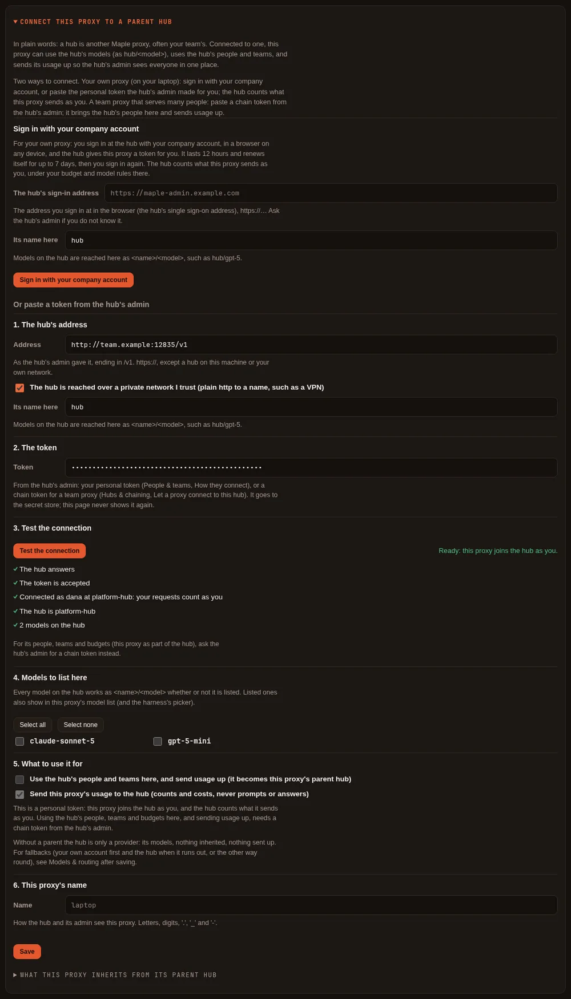
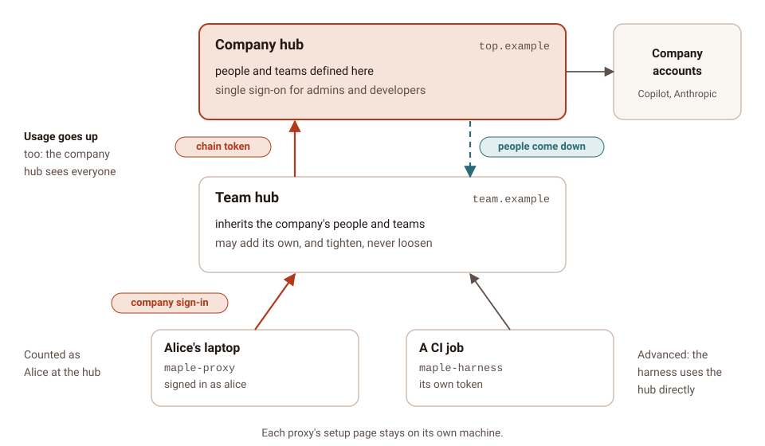
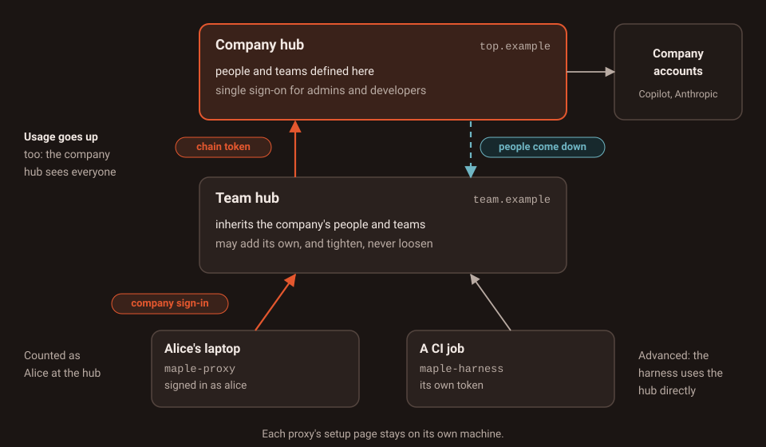
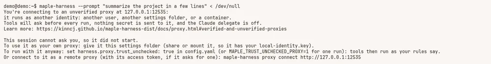
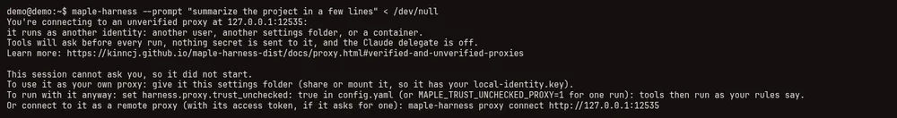

Which setup do I need? #
On this page
Maple runs the same way on one laptop and in a company: a proxy holds the accounts and talks to the models, and your tools talk to a proxy. The setups below differ only in how many proxies there are and how they are joined. Start with the first one that fits, and move to another later: nothing you set up is lost (see How to move between setups).
In plain words #
Answer three questions:
- Is it just you? Then use one laptop. Install it, sign in, work. Nothing on this page is needed, and nothing here shows up until you set it up.
- Does your company or team already run a Maple hub? Then join your laptop's proxy to it: sign in with your company account (about a minute), or paste a token the hub's admin gives you. Maple Harness keeps working exactly as before; it now also reaches the hub's models.
- Are you the one setting up the hub? Then pick by size:
- one machine for a team: a team hub;
- a hub per team, with one company hub above them: chained hubs;
- a hub that must keep running through restarts and lost machines: several replicas.
And for a CI job or a container that cannot run a proxy of its own (or runs one as another user), see CI and containers.
These combine: a company hub can run as several replicas, with single sign-on, a team hub chained below it, and laptops signed in to the team hub.
At a glance #
| Setup | Pick this if | What you run | Step by step |
|---|---|---|---|
| 1. One laptop | You use Maple on your own | maple-harness (it starts maple-proxy for you) | Your first session |
| 2. Laptop joined to a hub | Your team runs a hub and you want its models, budget and accounts | Your own proxy, signed in to the hub | Join your laptop to a team hub |
| 3. A team hub | Several people should share accounts, with a token, a budget and a model list each | One maple-proxy on a machine the team reaches | Share Maple with a team |
| 4. Chained hubs | Several teams, each with its own hub, and one place for people and usage | A proxy per team, joined to a company hub with a chain token | Connect a team proxy with a chain token |
| 5. Several replicas | A hub must not stop for a restart or a lost machine | Copies of one proxy behind a load balancer, with PostgreSQL and Redis | Kubernetes or Docker |
| 6. CI and containers | A job or container uses a hub directly, or runs a proxy as another user | maple-harness with a token, or with trust_unchecked | Connect the harness to a proxy |
Words used on these pages #
| Word | What it means |
|---|---|
| Proxy | maple-proxy, the program that holds sign-ins and keys and talks to the models. Every Maple install has one |
| Hub | A proxy that other machines or other proxies use. Nothing extra is installed: a hub is a proxy that listens on the network and asks every caller for a token |
| Personal token | An access token that belongs to one person. Everything sent with it counts as that person. Your proxy gets one when it signs in with your company account; an admin can also make one for you, or you make one on the hub's My access page |
| Chain token | A token the hub's admin makes for one proxy that serves many people. It lets that proxy bring the hub's people down, send its usage up, and say who asked for each request |
| Sign-in address | The hub's single sign-on address, such as https://maple-admin.example.com, where people sign in with their company account. It is not the address of the hub's models |
| Parent hub | The hub a proxy joined with a chain token (chain.parent). A hub you signed in to with your company account is never a parent |
1. One laptop #


Pick this if you use Maple on your own. This is the setup everyone starts with, and most people stay with.
What you run. maple-harness. It starts maple-proxy on the same machine when nothing is running, and you sign in
to your accounts on the proxy's setup page (http://127.0.0.1:11539). Claude Code, OpenCode and other tools on the same
machine can use the same proxy without a token (Use your models from other tools).
What it guarantees.
- The proxy listens only on this machine (
127.0.0.1), and its setup page refuses to listen anywhere else. - Maple Harness checks, on every connection, that the proxy it talks to is your own, with a key only you can read (Verified and unverified proxies).
- Your keys stay in your system keyring or secret store;
config.yamlholds only references. - No people, teams, hubs or tokens appear anywhere until you set them up.
What can go wrong, and how you see it.
| What happens | How you see it | What to do |
|---|---|---|
| The proxy is still the old release after an update | Before a session: "Your proxy at … is an older release than this harness", with [r] restart | Press r, or maple-harness proxy restart |
| The proxy runs as another user, in a container, or with another settings folder | "You're connecting to an unverified proxy at …"; tools ask before every run | How to fix it |
| Another program holds the proxy's port | "something else is answering on <address>, not your Maple proxy" | Stop that program, or move the proxy's ports in server: |
| An account is out of credits or rate limited | The request fails with that reason, and Provider health on the setup page shows it | Add a fallback (Fallbacks) |
Step by step: Install, then Your first session and Sign in.
2. Your laptop's proxy joined to a team hub #


Pick this if your team or company runs a Maple hub and you want its models, under your own name, budget and model list.
What you run. Nothing new. Your own proxy joins the hub, and Maple Harness keeps talking to your own proxy, as on
one laptop. Every tool that uses your proxy (Maple Harness, Claude Code, OpenCode) then reaches the hub's models as
hub/<model>, next to your own accounts if you keep any. There are two ways to join:
| Sign in with your company account (recommended) | Paste a personal token from the hub's admin | |
|---|---|---|
| When | The hub has single sign-on with developer sign-in on | Any hub, with or without single sign-on |
| How | Your proxy's setup page (Hubs & chaining, Sign in with your company account), maple-proxy chain connect --sso <sign-in address>, or the shortcut maple-harness proxy connect --sso <sign-in address> | Your proxy's setup page (Hubs & chaining, Connect this proxy to a parent hub, under Or paste a token from the hub's admin); or a provider of type: maple in config.yaml |
| What you need | The hub's sign-in address and your company account | The hub's model address (ending in /v1) and your token |
| How long it lasts | 12 hours at a time, renewed by your proxy for up to 7 days, then you sign in again | Until it expires (30 days for one you made on My access, unless your admin chose another length; never for one an admin made, unless they chose a date) or is revoked |
| The hub counts requests as | You | You |
maple-harness proxy connect --sso does not sign the harness in: it has your local proxy sign in, prints the link and
the code, and the harness keeps using your local proxy. No token reaches the harness.
With a pasted personal token, Test the connection says who the hub counts you as ("Connected as <you> at
<hub>: your requests count as you"), and Save keeps it without asking. The page leaves Use the hub's people
and teams here, and send usage up unticked and greyed out: a personal token uses the hub's models as you, and making
the hub this proxy's parent needs a chain token (setup 4). A hub before 2.2.0
cannot say whose a token is: the test then passes with a note saying so.


On the hub, the admin's People & teams shows each person's How they connect lines, with this way first:


What it guarantees.
- One place for your hub credential: your proxy. The harness never holds a hub sign-in.
- Everything your proxy sends counts as you at the hub: your budget, your allowed models and accounts. Who on your machine used your proxy is not sent; that is why this is for your own laptop.
- Your proxy keeps its own accounts, so you can fall back either way: your own account first and the hub when it runs out, or the hub first and a local model when the hub says no (Fallback across the chain).
- A sign-in renews itself; nothing about your company account is kept on your laptop, only the hub's token for you.
What can go wrong, and how you see it.
| What happens | How you see it | What to do |
|---|---|---|
| The hub runs a release before 2.2, or developer sign-in is off there | "<host> does not offer sign-in from a proxy …" or "… has sign-in from a proxy turned off …" | Ask the hub's admin for a token, or to turn developer sign-in on |
| Seven days passed since you signed in | Hubs & chaining and maple-proxy chain status say renewing ended; maple-harness doctor's Proxy line names the hub | Sign in again, or maple-proxy chain connect --sso again |
| Your access was revoked at the hub, or you were removed | "The hub ended the sign-in", shown at once | Ask the hub's admin; then sign in again |
| A pasted token expired or was revoked | Requests to hub/<model> are refused; the proxy's log says the hub refused this proxy's token, and the usage log records not authorised (route reason fallback:not-authorised when a fallback ran) | Get a new token and paste it again |
| The hub cannot be reached | Requests to the hub fail as unreachable, or go to your fallback | Check the network; set a fallback |
| Your proxy runs as several replicas, from a ConfigMap, or with read-only secrets | The sign-in is refused and says why | Use a chain token (setup 4) |
Step by step: Join your laptop to a team hub, and How developers sign in for the hub's side (My access).
3. A team hub for many people #


Pick this if several people should share accounts, and you want to see who used what, give each person or team their own accounts, or cap what each can spend.
What you run. One maple-proxy on a machine your team can reach (a server, a container, or one
replica on Kubernetes), listening on the network, with:
- people and teams, each person with their own token (Teams);
- optionally single sign-on, so admins sign in to the setup page with their company account and developers make their own tokens and sign their proxies in on My access (How developers sign in).
Each teammate then joins their own proxy to it (setup 2). Tools without a Maple proxy of their own (Claude Code or OpenCode on a machine with no Maple install) use the hub's address with the person's token as their API key.
What it guarantees.
- Off this machine every request needs a token with the
proxyscope, and the proxy will not start on the network until one exists. A request under a host name not inserver.allowed_hostsis refused. - Every request made with a person's token counts as that person; their budget, model list and accounts apply.
- The setup page stays on the hub's own machine. Through single sign-on, admins get a second, signed-in address that can do less (no keys, no providers, no machine details).
What can go wrong, and how you see it.
| What happens | How you see it | What to do |
|---|---|---|
No token with the proxy scope exists yet | The proxy does not start on a network address, and says why | Make one on People & teams first |
| A teammate's tool uses a name the hub does not know | 403 from the hub's address | Add the name to server.allowed_hosts |
| A token is wrong, revoked or expired | 401, "a valid access token with the proxy scope is required" | Make a new token for the person |
| A budget is spent | 429, budget_exceeded | Wait for the reset, or raise it |
| Plain HTTP on a network others share | Nothing visible: anyone on that network can read the tokens | Use HTTPS, or a private network such as Tailscale or a VPN |
The full list of refusals is in When a request is refused.
Step by step: Share Maple with a team, then Set up a team on the People & teams tab, and Single sign-on if you want it.
4. Hubs chained to a company hub #


Pick this if there is more than one hub: a hub per team or per office, with people defined once and every hub's usage in one place.
What you run. A proxy per team, each joined to the hub above it with a chain token made by that hub's admin (Hubs & chaining, Let a proxy connect to this hub), pasted on the team proxy (Connect this proxy to a parent hub). Laptops join the team hub as in setup 2.
What it guarantees.
- People and teams are defined once, at the top, and handed down; a hub below may add its own and tighten an inherited budget or model list, never loosen it.
- Usage goes up: the top hub reports on every proxy below it, each request counted once. Only counts and labels go up, never prompts, answers or files.
- Who asked travels up with each request, and only a proxy holding a chain token may say who asked. A chain token belongs to the first proxy that uses it.
- A revoked token stops working on every proxy below within seconds while the hubs answer.
What can go wrong, and how you see it.
| What happens | How you see it | What to do |
|---|---|---|
| The parent hub cannot be reached | Requests without a fallback fail as unreachable; after chain.directory_grace (15 minutes) inherited tokens are refused, the proxy's own keep working | Fix the network; usage waits and is sent later, once |
| A proxy below stopped asking | The hub map marks it not heard lately after five minutes | Check that proxy |
| The chain token is already used by another proxy | Test the connection says it is bound to another proxy | Unbind it on the hub, or make a new one |
A loop, or more than chain.max_hops proxies (4) | Status 508 | Fix the chain |
| A child tries to loosen an inherited rule | The command refuses it, naming the inherited value; the People card offers only Tighten | Ask the hub above to change it |
Step by step: Chain proxies into hubs, and Chained hubs for a worked example with screenshots.
5. Several replicas behind a load balancer #


Pick this if a hub (setup 3 or 4) must keep answering through a restart, an upgrade or a lost machine. One replica is enough for most teams: the proxy is light and restarts in seconds.
What you run. Copies of one proxy behind a load balancer, with storage.mode: central, one PostgreSQL and one
Redis. Then choose where the settings live:
| Settings in PostgreSQL (recommended) | Settings from a file (a ConfigMap) | |
|---|---|---|
| Setting | storage.settings: postgres (the default in central mode) | storage.settings: file |
| Change a setting | On any replica's setup page; every replica runs it within seconds | Edit the file and roll the replicas out; read-only on the page |
| Can replicas drift apart? | No: one that cannot confirm it runs the current settings is not ready | Yes, for a while: Maple reports it, and can take the odd one out |
| Samples | config/ha-shared (Kubernetes), compose.ha-shared.yaml (Docker) | config/ha (Kubernetes) |
| A good fit when | Admins change settings on the page | Every change goes through review and Git |
What it guarantees.
- Any replica serves any request: no sticky sessions, rate limits and budgets counted across replicas, signed-in browsers known to every replica.
- With settings in PostgreSQL, every replica runs the same configuration, and one that cannot confirm it is current
leaves the load balancer (
/readyzsaysnot ready) until it is. - A replica that stops finishes its running requests first.
What can go wrong, and how you see it.
| What happens | How you see it | What to do |
|---|---|---|
| PostgreSQL is away | /readyz says not ready; requests of people with a budget get 503 (unless storage.budgets_when_down: open); settings cannot change | Bring it back; waiting usage lines are written once |
| Redis is away | /readyz says not ready; the setup page answers 503; caches miss | Bring it back; browsers sign in again |
| Replicas run different settings (from a file) | Data & storage, Settings per replica (in red, below); /healthz adds replicas disagree on config | Finish the rollout; see Replicas that disagree |
| Shared keys differ between replicas | That replica is not ready, and Data & storage says so | Give every replica the same storage key |
The load balancer adds X-Forwarded-For but is not trusted | One client's wrong tokens get every client refused with 429 for a minute | List the balancer in server.trusted_proxies |
![The Central storage card on Data and storage for replica-a: mode central; settings from config.yaml (a ConfigMap), read-only on this page; Settings per replica, in red: 2 replicas running, they disagree (2 different settings), each replica's config and access digests and since when, and that a replica whose settings differ from most replicas' is taken out of the load balancer after two minutes; PostgreSQL and Redis reachable; tables up to date; 2 replicas seen; shared keys the same on every running replica.](../img/docs/data-central-drift-light.webp)
![The Central storage card on Data and storage for replica-a: mode central; settings from config.yaml (a ConfigMap), read-only on this page; Settings per replica, in red: 2 replicas running, they disagree (2 different settings), each replica's config and access digests and since when, and that a replica whose settings differ from most replicas' is taken out of the load balancer after two minutes; PostgreSQL and Redis reachable; tables up to date; 2 replicas seen; shared keys the same on every running replica.](../img/docs/data-central-drift-dark.webp)
config.yaml files, as when a rollout stopped half way. A demo setup with a local PostgreSQL and a stand-in Redis.A proxy with replicas cannot keep a company-account sign-in to a hub above it: join it with a chain token.
Step by step: Kubernetes: several replicas and Docker: several replicas.
6. CI jobs and containers #
Pick this if Maple Harness runs where no proxy of your own can run, or where the proxy runs as another user. There are two ways, and they are different things:
| Use a hub directly with a token (advanced) | Trust a proxy on the same machine that cannot prove it is yours | |
|---|---|---|
| When | A CI job or container that should use a team hub, with no proxy of its own | A proxy in a CI service container, or one run as another user, on the same machine |
| Setting | harness.proxy.url and harness.proxy.token, written by maple-harness proxy connect <address> | harness.proxy.trust_unchecked: true, or MAPLE_TRUST_UNCHECKED_PROXY=1 for one run |
| What changes | The harness sends every request to that hub with the token, and never starts, stops or restarts it | Tools run as your rules say instead of asking before every run |
| What stays off | Delegate to your local Claude; auth, savings and the quota meter run on the hub's machine | Nothing secret is sent to that proxy, and Delegate to your local Claude stays off |
For a job, keep the token in the job's secret store and pass it by name, so nothing is written:
maple-harness proxy connect --token-env MAPLE_PROXY_TOKEN https://hub.example:11535The variable's name must contain TOKEN or KEY (so commands the model runs do not see it). Without
--token-env, the command asks for the token without showing it, or reads it from standard input, and keeps it in
the secret store. maple-harness proxy disconnect goes back to the proxy on that machine.
What it guarantees. A token is never taken from the command line, and never written into config.yaml as such
(only ${secret:...} or ${env:...} references). Plain http:// to another machine is refused unless you pass
--allow-insecure.
What can go wrong, and how you see it.
| What happens | How you see it | What to do |
|---|---|---|
An unverified local proxy, and nobody to answer (--prompt, --rpc, no terminal) | The harness does not start, and says why and how to fix it (below) | Set trust_unchecked, or connect to it as a remote proxy |
Plain http:// to another machine | "proxy connect: the proxy at … is reached over plain http …" | Use https://, or --allow-insecure on a private network |
| The variable has another name | "… is not named like a secret …" | Use a name such as MAPLE_PROXY_TOKEN |
| The token is refused | proxy connect says so; maple-harness doctor's proxy line too | Get a new token |


With trust_unchecked on, maple-harness proxy status says so on its trust line:


proxy status while trust_unchecked is on for one run. A demo setup.Step by step: Connect the harness to a proxy and Verified and unverified proxies.
How to move between setups #
| From | To | What to do | What is kept |
|---|---|---|---|
| One laptop | Joined to a hub | Sign in (setup 2) | Everything: your accounts, settings and usage stay on your proxy |
| Joined to a hub | One laptop | Disconnect on Hubs & chaining, or maple-proxy chain disconnect (the token is revoked at the hub too); for a pasted token, delete the hub's provider | Your own accounts and your usage history |
| Signed in with a company account | A chain token (your proxy now serves others) | Paste the chain token on Hubs & chaining: once saved, the sign-in is ended at the hub | The provider name, so hub/<model> keeps working |
| One laptop | A team hub | Open the proxy to the network on a machine the team reaches; add people and tokens | Its accounts and usage history; earlier requests stay unattributed |
| A team hub | A team hub under a company hub | Ask the company hub's admin for a chain token, paste it, restart | Your own people (they become name@your-hub at the top unless defined there) |
| One proxy (files) | Several replicas | Copy the settings in with storage.settings_seed or maple-proxy storage import-config --from config.yaml --access access.json; set up PostgreSQL and Redis | Settings and access tokens. The usage history in the daily files is not copied into PostgreSQL: keep the files, or load them into a lake |
| Settings from a ConfigMap | Settings in PostgreSQL | Apply config/ha-shared instead of config/ha | Everything; the steps |
| Settings in PostgreSQL | Settings from a ConfigMap | maple-proxy storage export-config, then apply config/ha | Everything; the steps |
| Harness using a hub directly | Harness using your own proxy | maple-harness proxy disconnect, then join your proxy to the hub (setup 2) | Your sessions; the stored token can be deleted from the secret store |
What is not verified #
The setups on this page were run on one Linux machine: several proxies on loopback with stand-in model services, a stand-in identity provider through a TLS front, and the replicas with a local PostgreSQL and a stand-in Redis. Not yet run: real Google, Microsoft Entra ID, Okta or GitHub accounts, chains over HTTPS between machines, real GitHub Copilot accounts behind a hub, a real Kubernetes cluster, a real Redis, and macOS or Windows.
Related #
- Share Maple with a team: the worked team and chain examples, with screenshots.
- Teams, Chain proxies into hubs, Single sign-on and How developers sign in: every key and every step.
- Run the proxy in Docker and on Kubernetes: one container, or several replicas.
- Security: what each setup protects, in short.